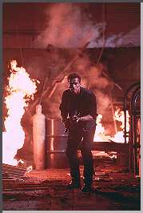

Contents | Features | Reviews | News | Archives | Store |
 |
|
| Movie Credits | Buy It! |
Eraser
Review by Carrie Gorringe
|  | Directed by Charles Russell. Starring Arnold Schwarzenegger, |
"You’ve been erased." -- the final line spoken by US Marshall John Kruger (Schwarzenegger) to a rather shady if cowardly character named Johnny C. (Pastorelli), as Kruger rather violently obliterates any traces of Johnny’s past life. Kruger works for the Witness Protection Program (WITSEC), the branch of the Treasury Department that helps co-operative witnesses disappear into thin air, conveniently out of reach of all who might wish to eliminate them. Going one logical step further, Kruger actually stages the faked "deaths" of these witnesses to provide a false sense of reassurance to their enemies, with lots of handy explosions and immolations to persuade even the most skeptical. Needless to say, in this sphere of work there is none better at his work, as Kruger’s supervisor and mentor, Robert Deguerian (Caan) tells him and everyone else who cares to listen.
Of course, this idyllic stage in upward professional mobility can’t continue indefinitely, so some twists have been added to the tale. A computer expert named Lee Cullen (Williams), working for a weapons manufacturer named Cyrez, has just uncovered evidence concerning Cyrez’s involvement in illegal arms shipments, and has much of said evidence in her possession. Naturally, those who stand to benefit from these transactions, many at the highest government levels, would like her to keep silent about the information -- on a rather permanent basis. Worse, Ms. Cullen was betrayed by yet another government agency during the process of gathering the information, and so she is in no mood to listen to Kruger’s warnings of impending danger. A conveniently-timed fire-bombing of her home persuades her to believe otherwise. At about the same time that Cullen enters the WITSEC program, it seems to have developed a few leaks, with said witnesses actually encountering the unpleasant, and last-minute, realization that protection services are no longer being rendered on their behalf. Kruger’s task is to keep Cullen safe at the same time he has to deal with the mole who is attempting to discredit him within the agency, a situation that is easier described than accomplished; even the head of the program, Beller (Coburn) has his own doubts concerning Kruger’s credibility rating.
But Eraser’s narrative structure may not be the most thrilling aspect of this film. For those of you whose movie-going budget has been somewhat strained by the plethora of action-adventure films popping up this summer like the inevitable weed, you might be gratified to learn that the filmmakers in this case have provided you with a well-deserved break; as several wags have already noted, the resemblance between the narratives of Eraser and another action-adventure film has been too close to be mere coincidence (hint: the other film stars Tom Cruise). It’s hardly a case of giving the game away to note the number of films this summer that have plot lines revolving around the innocent man who must fight to clear his name; either every scriptwriter in Hollywood has been reading Les Miserables, or (a more likely bet) they’ve all remembered the grosses from the film version of Andrew Davis’ 1994 big-screen version of The Fugitive and decided that lightening can strike at least several times in their favor (speaking of which, director Davis will be honoring us later on in the season with Chain Reaction, his own reinterpretation, if you will, of the society-done-him-wrong theme). This isn’t to say that two films slated for release in the same summer can’t borrow similar elements from each other’s storylines. Rather, the problem stems from films borrowing indiscriminately, right down to the very mistakes. In Eraser’s case, its main defect is an overwhelming impression of monotony which dampens the intended cause-and-effect chain considerably. There’s lots of flash, but very few thrills.
As with nearly every other action film this summer, the main source of relative lifelessness on screen is simple to pinpoint. Despite the official credits for the film’s screenplay, there are indications that at least four or five scriptwriters were attached to Eraser’s evolution from rough draft to final script, and the confusion shows. Suffering from inconsistency, the film’s storyline lurches around clumsily like Frankenstein’s monster suffering from a bad case of restitching, hemorrhaging incompetence from every seam. As with another blockbuster of the summer that suffered from too many rewrites and not enough prior consideration (Twister), Eraser is another action film with too many set pieces and not enough intelligent filler in between (the only difference between the two films being that the special effects in Eraser don’t inspire insomnia, but they do inspire similar levels of incredulity, long, long before you need to catch your breath). Having already exhausted the explanation concerning the need to make the journey between Exciting Action Sequence "A" and Exciting Action Sequence "B" as interesting as possible for the audience, there is no need to rehash it here. Rather than addressing the problems in Eraser by citing the film’s inadequacies as the proverbial illustration of too many cooks spoiling the broth, the analogy might better be cited as too many culinary apprentices not stirring the narrative mixture properly from the bottom, thereby allowing it to burn irretrievably due to inexcusable carelessness. Director Russell (of The Mask) provides no compensation for the script’s defects, since he directs Eraser in a manner best described as pedestrian.
Instead of whatever subtleties in plot development that the action genre can tolerate, the Eraser audience member is treated to -- take a deep breath -- the sight of Arnold attempting to express something from the depths of his soul rather than the depths of his automatic gun barrel. The result is less a revelation than an abomination, since Mr. Schwarzenegger’s attempts at being earnest are so marred by an extremely stilted delivery (but not by his accent) that the lines inspire more of a sense of risible disbelief than a sense of authenticity; his discomfort with the process of evocation is almost tangible. The film improves somewhat only when he abandons that pretense and begins firing off the sardonic one-liners that have worked so well for him in the past. There are many of them (the best involving Arnold and the impending demise of a crocodile), but, at best, they act as a pretty wrapping over an extremely inadequate package.
It may be no surprise that the best work in Eraser comes from the supporting cast. Cobourn and Caan, two actors who have become virtual no-shows on the big screen for a long time, bring the requisite amount of class, and then some, to any film fortunate enough to be graced with their presence, and Eraser is no exception (even Arnold gains stature as an "Actor" from just the shortest amount of time of on-screen co-existence with them). Pastorelli, best known as the laid-back artist/nanny Eldon on T.V.’s Murphy Brown, provides a deft comedic turn as Schwarzenegger’s unexpected sidekick in crime fighting. But the real surprise in Eraser is Williams, who, having been handed what is traditionally the most thankless of roles in an action film -- the helpless heroine -- gives it a strong and badly-needed injection of guts. There are no shrieking Perils-of-Pauline antics here, as Williams fights it out with the baddies right alongside Arnold. Perhaps someone should have set her on the filmmakers before principal photography began; a better-quality product might have been the end result.
Contents | Features | Reviews | News | Archives | Store
Copyright © 1999 by Nitrate Productions, Inc. All Rights Reserved.